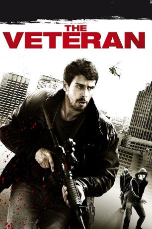

#7997 The Veteran
 
 IMDB-Wertung: 5.9 / 10
IMDB-Wertung: 5.9 / 10  Metascore: 0
Metascore: 0 
Als der Veteran Robert Miller (Toby Kebbell) aus Afghanistan heimkehrt, hat sich seine Nachbarschaft verändert. Brutale Drogenhändler kontrollieren seinen Wohnblock in Südlondon. Auf der Suche nach einer Aufgabe bringt ihn sein alter Freund und Ex-Marine Danny (Tom Brooke) zum mysteriösen Geheimdienstler Langdon (Brian Cox). Dieser wirbt Miller für eine Undercover-Mission an: Er soll Terroristen observieren, die einen Anschlag vorbereiten. Doch Miller findet viel mehr raus, als seinen Vorgesetzten lieb sein kann. Die Spuren führen von den Drogenhändlern seines Blocks in den britischen Geheimdienst. Der zunehmend paranoide Veteran wittert eine unfassbare Verschwörung. Miller sieht nur noch einen Weg: Er muss handeln.
Jahr: 2011
Dauer: 98 Minuten
FSK: 16
Land: England Studio: Pandastorm PicturesTonspuren: DTS - ,
Untertitel: Deutsch,
Auflösung: 1080p (1920x1040) Größe: 6809 MB
Genre: Action, Thriller
Regisseur: Matthew Hope
Drehbuch: Matthew Hope
Soundtrack: Mark Delany
Darsteller:
 Toby Kebbell als Robert Miller
Toby Kebbell als Robert Miller- Adi Bielski als Alayna Wallace
 Tony Curran als Chris Turner
Tony Curran als Chris Turner- Ashley Thomas als Tyrone Jones
 Tom Brooke als Danny Turner
Tom Brooke als Danny Turner- Ivanno Jeremiah als Fahad Sahal
 Brian Cox als Gerry Langdon
Brian Cox als Gerry Langdon Mem Ferda als Hakeem
Mem Ferda als Hakeem Selva Rasalingam als Fawwaz Abdullah
Selva Rasalingam als Fawwaz Abdullah- Conrad Peters als Khaled
 Adrian Bouchet als Chechen 1
Adrian Bouchet als Chechen 1 Josh Myers als Chechen 2
Josh Myers als Chechen 2- Warren Rusher als Napoleon
 Serhat Metin als Gang Member
Serhat Metin als Gang Member Bern Collaço als Stripclub Punter (uncredited)
Bern Collaço als Stripclub Punter (uncredited)- David Lyddon als Passer by (uncredited)
- Eboseta Ayemere als Ryan Sahal
- Brendon Read als Big Benny
- Christopher Peter Smith als Omar
- Steve Weston als Ramush Jashari
- Bob Mercer als Ski-Mask Man 1
- James Alexander als Ski-Mask Man 2
- Max Callum als Shooter
- Gary Barnshaw als Iconiq Cafe Owner
- Miles Harrington als Assassin in Van
- Shiden Mezghebe als Gang Member
Datei: X:\2011(N-Z)\Veteran, The (2011, FSK16, 1920x1040).mkv seit 09.01.2018
Festplatte: HD 2011(G-Z)
 Es gibt insgesamt 132 Filme in der Gruppe '2011(N-Z)'
Es gibt insgesamt 132 Filme in der Gruppe '2011(N-Z)'